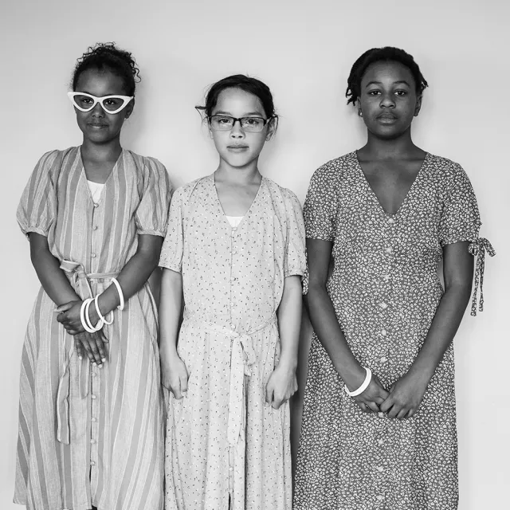
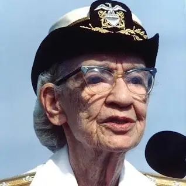
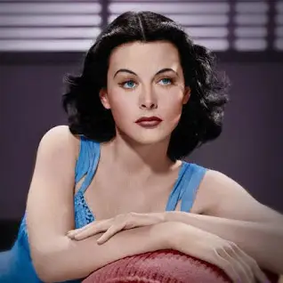
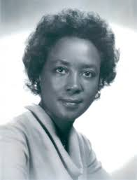

Hidden Figures - A story based on the lives of three phenomenal women. Katherin Johnson, Dorothy Vaughan and Mary Jackson. They all worked for NASA, underpaid, underappreciated and struggling through the challenges of segregation. Over the next 20 years, Jackson reached the highest senior-level title within the engineering department.Jackson was posthumously awarded the Congressional Gold Medal in 2019. Johnson’s work that helped the Apollo 13 crew return safely to Earth in 1970 when the mission was aborted. Her calculations were essential to the Space Shuttle program and for the mission to Mars. In 2015, Johnson was awarded the Presidential Medal of Freedom and the Congressional Gold Medal in 2019. Vaughan's ontribution to the Scout Launch Vehicle Program was critical to its success. In 2019, Vaughan was awarded the Congressional Gold Medal, and the Vaughan Crater on the far side of the Moon was named in her honor.

Grace Hopper, a pioneering female figure in computer science. Grace revolutionised the field with her groundbreaking contributions. Grace was a mathematician and naval officer, she played a pivotal role in the development of programming languages, notably leading the team that created the first compiler, which translated human-readable code into machine-readable instructions. Grace's invention transformed programming from a complex, labor-intensive task to a more accessible and efficient process. Which laid the foundation for modern software development.

Hedy Lamarr, an incredible female actress and inventor, left an impactful mark on computer science history through her work in wireless communication. Hedy Lamarr co-developed a frequency-hopping spread spectrum technology during World War II, intended to block enemy jamming of radio-controlled torpedoes. This innovation laid the groundwork for modern wireless communication systems, including Bluetooth and Wi-Fi. Despite facing backlash and small amounts of recognition during her lifetime, Lamarr's contributions were eventually acknowledged posthumously, cementing her status as a visionary inventor. Her legacy underscores the intersection of creativity and technological innovation, inspiring future female generations in both the arts and sciences.

Annie Easley, an African American computer scientist and mathematician. Annie made significant contributions to the field of computer science and space exploration. Despite facing racial and gender discrimination, Annie's perseverance led her to become an important figure at NASA's Lewis Research Center over three decades ago. Annie Easley's work encompassed in a range of projects, including developing and implementing computer code for analysing alternative power technologies and supporting the Centaur high-energy upper-stage rocket. Her innovative work and dedication paved the way for future generations of women and minorities in STEM fields, inspiring individuals to pursue careers in technology.
Ada Lovelace, often regarded as the world's first computer programmer, made groundbreaking contributions to the field of computer science in the 19th century. Ada Lovelace was a English mathematician and writer, Ada collaborated with Charles Babbage on his Analytical Engine, an early mechanical general-purpose computer. Ada's visionary insights led her to write the very first algorithm intended to be processed by a machine, effectively making her the first programmer in history.

Sister Mary Kenneth Keller, a pioneering figure in computer science, made significant contributions to the advancement of technology and education. As one of the first women to earn a Ph.D. in computer science, she broke gender barriers and paved the way for women in STEM fields. Keller's research focused on computer programming languages, particularly in the areas of symbolic languages and compiler theory. Additionally, she played a crucial role in establishing computer science departments at various universities, advocating for the inclusion of women in computing education. Keller's legacy continues to inspire future generations of computer scientists, particularly women, to pursue their passions in technology.